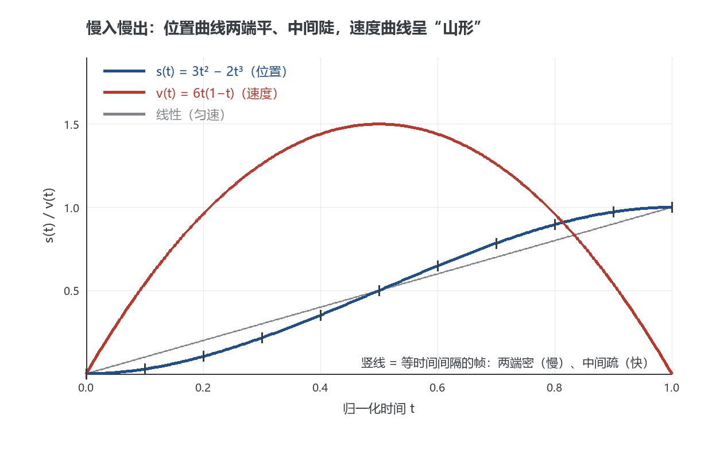

Course / Article
- 章节
- 3,145 字
- 2026.11.15
- 14 个小节
第三部分 动画的12条基本原则
下载 PDF离线 / 打印版
2.1 背景与总览
这 12 条原则由迪士尼九老（Frank Thomas 与 Ollie Johnston）在长期实践中总结，1981 年写入《The Illusion of Life》，并被归纳为 12 条。它们原本针对二维手绘动画，但被证明是"让画面有生命、可信、易读"的一般规律，因此也构成三维计算机动画的表演与制作基础。
| # | 原则（中/英） | 一句话含义 | 三维中的主要实现 |
|---|---|---|---|
| 1 | 挤压与拉伸 / Squash and Stretch | 用形变表现重量、弹性、材质 | 骨骼缩放、晶格/变形器、肌肉系统 |
| 2 | 预期 / Anticipation | 动作前的反向准备 | 预备姿态、蓄力帧 |
| 3 | 舞台化（布局）/ Staging | 让观众一眼看清要表达的内容 | 镜头、构图、灯光、遮挡、剪影 |
| 4 | 连贯动作法与关键动作法 / Straight Ahead & Pose to Pose | 两种制作方法 | 关键帧+插值；特效用逐帧/程序化 |
| 5 | 跟随动作与重叠动作 / Follow Through & Overlapping Action | 主体停后附属部分继续；各部件不同步 | 动力学、次级骨骼、布料/毛发 |
| 6 | 慢入与慢出 / Slow In and Slow Out | 起止慢、中间快 | 曲线切线、缓动函数 |
| 7 | 弧线 / Arcs | 自然运动走弧线 | 轨迹编辑、弧形约束、脊柱曲线 |
| 8 | 次要动作 / Secondary Action | 补充主表演的小动作 | 分层动画、程序化细节 |
| 9 | 时间（节奏）/ Timing | 帧间隔决定重量、速度与情绪 | 关键帧间距、时间缩放 |
| 10 | 夸张 / Exaggeration | 强化本质以传达 | 姿态夸张、形变、smear/拖影 |
| 11 | 扎实的描绘 / Solid Drawing | 结构、体积、透视、重心 | 造型/解剖/权重/体积感 |
| 12 | 吸引力 / Appeal | 角色有魅力、可读、有性格 | 造型、材质、表演、剪影 |
整体原理：这 12 条共同服务于三个目标——可读性（观众看得懂）、可信性（像真的、有重量）、表现力（有情绪、有性格）。它们不是孤立规则，而是互相配合：预期 + 慢入慢出 + 弧线 + 跟随动作共同构成一个"可信的动作"。
2.2 挤压与拉伸（Squash and Stretch）
含义：物体在受力/运动时发生形变——被压缩时变扁变宽（squash），被拉伸时变长变细（stretch）。
原理： - 真实物体都不是刚体，受力会产生弹性形变；形变向观众传递"重量、软硬、速度、力度"； - 关键约束是体积守恒（近似）：沿一个方向压缩，另外两个方向必须膨胀；否则看起来像"缩放"而不是"挤压"； - 是最能体现"物质感"的一条：球落地压扁 → 弹起拉长；布袋 vs 铁球靠形变区分。
三维中的实现与注意： - 用骨骼缩放（scale）、晶格（lattice）、变形器（bend/taper）、肌肉/脂肪系统、blendshape； - 需要保持体积：只缩放一个轴会"瘦下去"，应同时反向缩放另两轴； - 拉伸常用于表现快速运动（配合运动模糊），可做"拖影/smear"； - 过度挤压拉伸会走向卡通化（如《猫和老鼠》），写实角色需克制；布料、软组织、脂肪的晃动属于同一族效果（jiggle）。
2.3 预期（Anticipation）
含义：在主要动作之前，加入方向相反或蓄力的准备动作（向后拉弓才能射箭），让观众预先知道"将要发生什么"，并让动作更有力。
原理： - 人做动作前必须蓄力/调整重心，物理上必要； - 心理上，预期建立"期待—满足"，使动作可读、有张力；没有预期，动作会显得突兀、无力； - 预期还可以用于"反预期"（观众以为要往左，实际往右）制造笑点或惊讶。
三维中的实现：预备姿态（anticipation pose）、更长的蓄力时间、面部与视线先行（眼睛先看目标）、重心下沉；注意预期不能过长，否则节奏拖沓；次级预期（double take）用于喜剧。
2.4 舞台化 / 布局（Staging）
含义：以最清晰的方式呈现一个动作、一个想法或一种情绪——构图、机位、姿势、剪影、灯光都为"可读性"服务。
原理： - 观众只在一瞬间看画面，任何含糊（遮挡、重叠、正对镜头的动作、灰暗的光）都会让信息丢失； - 一次只讲一件事（one idea at a time），用视线引导、明暗对比、留白来突出主体； - 剪影测试：把角色涂黑，若姿态仍能读懂，则舞台化成功。
三维中的实现：Layout/previs、相机选择（正面/侧面/三分之四）、景深与焦点、灯光引导、避免角色与背景融合（轮廓光）、避免肢体自遮挡（"剪影清晰"的 pose）、镜头长度与切换节奏。
2.5 跟随动作与重叠动作（Follow Through & Overlapping Action）
含义： - 跟随动作：主体停止后，附属部分（头发、衣摆、耳朵、尾巴、肚腩）因惯性继续运动并逐渐衰减； - 重叠动作：一个角色的各部件不以同一节奏运动——身体先动、头后动、手臂再晚一点，形成"错峰"，避免像一块铁板。
原理：惯性与阻尼；不同质量的部件有不同的跟随延迟（重量差异）；符合牛顿力学与观察经验，能显著提升真实感与流畅感。
三维中的实现：次级骨骼/非均匀延迟（offset keyframes）、动力学（hair/cloth/soft body）、程序化跟随（spring/jiggle）、给不同部件设置不同的时间偏移；注意"重叠"不是"乱"，主次分明，跟随动作不能抢主表演。
2.6 慢入与慢出（Slow In and Slow Out）
见 2.14 专节（大纲单列，务必掌握）。
2.7 弧线（Arcs）
含义：自然界的运动大多沿弧线（抛体、摆动、转身、关节转动），而不是直线或折线。
原理：关节的转动使末端走圆弧；重力使抛体走抛物线；生物体的运动是旋转的复合。直线运动显得机械、生硬（机器人感）。
三维中的实现：检查运动轨迹曲线（motion trail）、调整曲线切线使轨迹平滑、用弧形/圆形约束、脊柱与四肢的弯曲、避免肢体在同一平面内做直线位移；对快速动作可加"弧线拖影"。
2.8 次要动作（Secondary Action）
含义：为强化主动作而附加的小动作或细节（说话时的手势、走路时晃动的配饰、思考时皱眉）。
原理：次要动作使角色"活着"、有性格、有细节；但它必须从属于主动作，不能分散注意力，也不能改变主动作的含义。
三维中的实现：分层动画（身体层、面部层、手指层）、程序化细节（呼吸、眨眼、重心微移）、物理模拟（衣摆、头发）、表情叠加；注意"次要"是相对主动作而言，若它抢戏就变成"抢镜"。
2.9 时间（节奏 / Timing）
含义：动作在时间上的分配——两个关键帧之间的间隔决定动作的快慢、重量与情绪。时间（timing）+ 空间（幅度/spacing）= 动作的全部表达。
原理： - 同一动作在不同 timing 下含义完全不同：快速=轻/急/紧张，缓慢=重/懒/庄重； - "timing 决定重量"：重物起落慢、加速慢；轻物快； - 帧数（在固定帧率下）就是时间的度量，因此"加一帧/减一帧"都会改变表演。
三维中的实现：关键帧间距、曲线形状、时间缩放（time warp）、慢动作/快进、动画层的时间偏移、24/60fps 的选择；戏剧节奏（停顿、留白）也是 timing 的一部分。
2.10 夸张（Exaggeration）
含义：把动作、表情、形体的特征强化到超出真实，以突出本质、传达情绪。
原理：真实往往平淡，强化才能被"读到"；夸张不是胡乱变形，而是抓住本质特征并放大，仍需保持可信（"基于真实的谎言"）。夸张程度取决于风格：写实片克制，卡通片放开。
三维中的实现：pose 夸张（更大的伸展、更强的对比）、形变（挤压拉伸）、面部表情夸张（blendshape 幅度）、速度夸张（smear frame、拖影）、比例夸张（大头小身）；注意夸张过度会失去重量感与可信度。
2.11 扎实的描绘（Solid Drawing）
含义：画出的形象要有体积、结构、透视、重心与平衡感，像"能拿在手里"的三维物体。
原理：观众能感知"不对劲"的结构（重心不稳、透视错误、体积消失）；扎实的造型是一切表演的载体。
三维中的对应：模型拓扑与体积、解剖结构（骨骼与肌肉）、重心与平衡（pose 的平衡线）、透视与镜头焦距、权重（变形时不塌陷）、材质与光照的体积感。三维中"solid drawing"转化为"扎实的造型与解剖 + 正确的体积/重量"。
2.12 吸引力（Appeal）
含义：角色要让观众愿意看——有魅力、有个性、有可读的剪影，而不只是"好看/可爱"。
原理：吸引力来自设计（造型、比例、色彩、材质）、表演（性格、节奏、眼神）与"可读性"（剪影清晰、动作明确）；反派也可以有吸引力（魅力型反派）。
三维中的实现：造型与比例设计、材质与色彩、剪影测试、性格化的表演与 pose、镜头与灯光塑造；避免"塑料感/无个性"的通用模型。
2.13 连贯动作法与关键动作法
| 比较项 | 连贯动作法（Straight Ahead Action） | 关键动作法（Pose to Pose） |
|---|---|---|
| 做法 | 从第一帧开始按顺序逐帧往下画，事先不规划中间姿态，边画边定 | 先画出关键姿态（极值/转折），再补中间帧 |
| 优点 | 动作流畅自然、有即兴感与意外的生动（尤其适合快速、复杂的动作） | 结构清晰、时间与构图可控、便于分工与修改、便于三维实现 |
| 缺点 | 难以控制时长、关键姿态与整体节奏，容易"跑偏"、返工大 | 容易僵硬、缺少流畅感，需靠曲线与中间姿态补足 |
| 适用 | 火、水、烟、爆炸、毛发、快速打斗、群舞等"流动"的内容 | 有明确表演与节奏的角色动作、对白、绝大多数三维角色动画 |
原理：两者本质是"自下而上（局部生成整体）"与"自上而下（先定骨架再填肉）"的差别。三维计算机动画的基础流程是关键动作法 + 曲线插值（关键帧 + F-curve + 缓动），再叠加连贯动作法的思路做细节（粒子、布料、特效、逐帧修正）。现代流程常混合使用：主体用 pose to pose，布料/毛发/粒子用 straight ahead（物理模拟）。
2.14 "慢入和慢出"原则（Slow In and Slow Out）
含义：动作在开始（slow in）和结束（slow out）时速度慢，中间速度快——中间帧在时间上靠近关键帧（两端帧密集、中间帧稀疏）。
原理： - 物理：物体有质量与惯性，启动需要加速过程，停止需要减速过程，因此位置—时间曲线在两端斜率小、中间斜率大； - 知觉：观众通过"帧的疏密（spacing）"感知速度与重量，两端加密使动作"有重量、不生硬"； - 表演：缓入缓出也用于强调与情绪，如缓慢转头、停顿后突然发力。
数学表达：设归一化时间 t∈[0,1]，位置 s(t) 从 0 到 1。线性为 s(t)=t；常用的缓入缓出为平滑阶跃

其速度在 t=0 与 t=1 处为 0，中间最大（0.5 处 v=1.5），即"两端慢、中间快"。更一般的三次贝塞尔缓动用两个控制柄 (c1, c2) 调节快慢分布（c1 越大启动越慢，c2 越大收尾越慢）。
注意： - 并非所有动作都要缓动：机械运动、匀速平移、钟表指针应保持线性；全部缓动会让动作"漂浮（floaty）"、失去重量与力度； - 缓动的"对比"才有力量：慢之后要快，快之后要停； - 三维中的实现：F-curve 的贝塞尔切线/自动钳制（auto-clamped）、ease in/out 关键帧类型、曲线编辑器中的手柄；物理模拟的弹簧阻尼也会自然产生缓动。
考点：慢入慢出的定义 + 物理/知觉原理 + 数学形式（s(t)=3t²−2t³，速度为 0 的端点）+ 反例（机械运动应线性）+ 三维实现（曲线切线）。